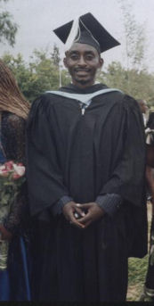
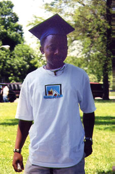

Supporting education and training in Africa
Refugee Education
In the last few years, DAAT has awarded scholarships to four refugees from the Democratic Republic of Congo (DRC) to study at Daystar University in Nairobi.- Frank Byaombe, 28, graduated with a BA in Community Development in June 2003. Frank is currently working for Daystar US to promote sponsorship of African students, especially those from war zones.
- Theophile Elekamo, 30, completed his BA in Business Administration and Management in June 2003. He is looking forward to the time when he can return to DRC.
- Jimmy Kasongo graduated from Daystar University in Nairobi in 2005 with a BA in Community Development. He was planning to return to the Democratic Republic of the Congo to work in community projects there. In the meantime he was involved in the planning of several educational projects in Kenya.
- Sibo Muhire graduated from Daystar University in Nairobi in 2006, also with a BA in Community Development. He has since returned to his family near Goma, Democratic Republic of Congo. Conditions there are very difficult, but he is searching for a job.
| 
Sibo Muhire |

Frank Byaombe |
|---|